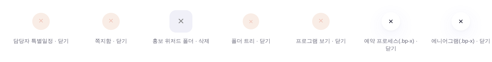
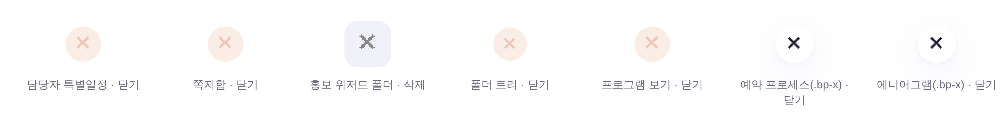

운영자 지시 260805 2차 「게이트로 저런것들 일괄 처리해줘」 · 1차(docs/reports/260805_모달X_정본글자_전후.html)에서 고친 건 모달 하나였고, 이번엔 같은 부류 전부를 쓸었다 ·
촬영 tools/scratch/shot_xicons_ba.mjs(버튼 마크업을 index.html 실코드에서 onclick 속성으로 뽑아 실앱 CSS 위에 렌더 · 재타이핑 0) · 900×700 / dsf 4.
같은 버튼·같은 스타일·같은 자리. 글자만 ×(U+00D7) → ✕(U+2715). 나머지 41곳은 접근명만 붙어 화면 변화 0이라 여기 없다.
× U+00D7 (얇은 곱셈기호)
✕ U+2715 (앱 정본 · 83곳 전건 일치)
.bp-x 글래스 2종도 그대로다 —
그 부품들을 .modal-x(인디고)로 바꾸는 건 색이 바뀌는 디자인 결정이라 §5로 넘겼다.뜻을 지어내지 않는 것이 이 청산의 원칙이었다. 접근명은 대부분 이미 있던 title을 그대로 미러했다.
| 유형 | 건수 | 어떻게 |
|---|---|---|
aria-label = 기존 title 미러 | 37 | 뜻이 이미 코드에 있었다 — 닫기 22 · 삭제 10 · 제거/비교 제거/영역 삭제/해제 5. 지어낸 값 0 |
title = 기존 aria-label 미러 | 3 | .pm-co-x 2 · .bp-x 1 — 반대로 title이 없던 자리 |
| 둘 다 없음 → 실측 후 「닫기」 부여 | 8 | onclick이 전부 close*인 걸 확인하고 부여(closeSpecialView · closeMsgBox · closeBatchWizard · closeFolderTreeModal · closePanel · closeProgramView · closeSubPop · _cbToggle) |
글자 × → ✕ | 7 | 위 §1 — 유일한 시각 변화 |
| 합계(중복 제외) | 48 | 남은 미달 0 / 전체 83곳 |
1차 게이트는 class="modal-x"만 봤다. 그러면 클래스 없이 인라인 style로 그린 X 버튼은 영원히 안 걸린다 —
그리고 실측상 그 인라인 4곳이 전부 ×에 title·aria 0이었다. 그래서 판정 기준을 바꿨다.
| 1차 (클래스 기반) | 2차 (현행) | |
|---|---|---|
| 대상 | class="modal-x" 중 닫기 | 라벨이 X 한 글자인 버튼 전부 · 클래스 무관 (83곳) |
| 글자 | ✕ 하드 0 | ✕ 하드 0 (동일) |
| 접근명 | aria-label 래칫 22 | title·aria-label 한 벌 하드 0 |
| 인라인 X 버튼 | 못 잡음 | 잡음 |
.bp-x·.panel-close 등 | 대상 밖 | 대상 |
회귀 주입 3종 실측 — 세 가지 재발 경로를 각각 주입해 전부 차단되는 걸 확인했다.
① 클래스 없는 인라인 X (1차 게이트가 못 잡던 자리) <button style="width:32px;height:32px;border-radius:50%" onclick="foo()">×</button> → ✗ L2535 글자 「×」(U+00D7) · title 없음 · aria-label 없음 exit=1 ② .modal-x 에서 aria-label 제거 → ✗ L20290 aria-label 없음 exit=1 ③ .bp-x 글자를 구 × 로 되돌림 → ✗ L26893 글자 「×」(U+00D7) exit=1 원복 후 → ✓ 디자인 기틀 통과 … X아이콘 버튼 83개 전건 정본(미달 0) exit=0
npm run check → check_design ✓ (raw hex 1578/1578 무변 · 신규 색·토큰·CSS 0
· X아이콘 버튼 83개 전건 정본(미달 0))
check_refs ✓ · check_wiring ✓ · build_annual_yr ✓
npm run smoke → ✓ · npm run smoke:layout → ✓ (이젤 하단선 계약 무변)
인라인 script 8블록 파싱 ✓ · pageerror 0
이번 일괄에 일부러 안 넣은 두 가지. 둘 다 색·활자가 바뀌는 디자인 결정이라 게이트가 판정할 축이 아니다.
.bp-x 글래스 2곳을 .modal-x(인디고)로 통합할지 —
지금은 글자·접근명만 정본화했고 색은 그대로다. 통합하면 그 6곳의 색이 살몬/글래스 → 인디고로 바뀐다.
「부품 통합」은 §2 인벤토리를 건드리는 결정이라 지시 없이는 안 한다..modal h3{16px/700}이고 17/800은 앱에서 이 하나뿐.
1차 리포트 §5에 전후를 그려 뒀다. 다만 활자는 게이트로 강제할 축이 아니다 —
실측상 모달 제목이 15/16/17/18/19px로 갈려 있고 그중 상당수가 화면별 의도라, 하나로 못 박으면 그게 곧 새 규칙 창작이다(기틀 §3).